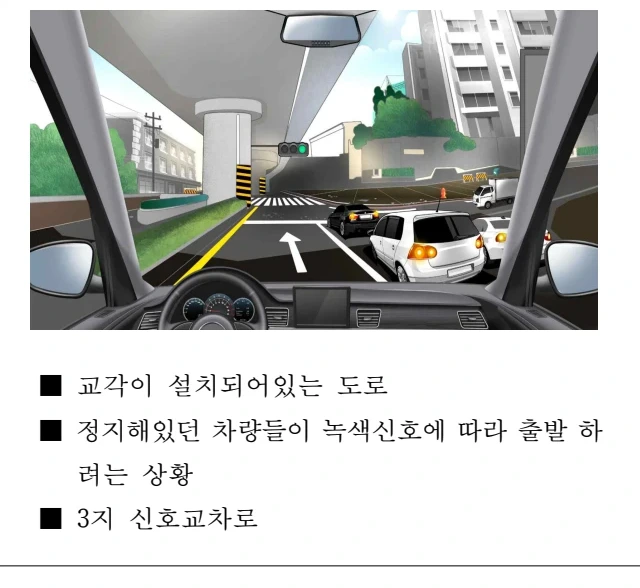

783. 다음 상황에서 교차로를 통과하려는 경우 예상되는 위험 2가지는?

- ①3차로의 하얀색 차량이 우회전 할 수 있다.
- ②2차로의 하얀색 차량이 1차로 쪽으로 급차로 변경할 수 있다.
- ③교각으로 부터 무단횡단 하는 보행자가 나타날 수 있다.
- ④횡단보도를 뒤 늦게 건너려는 보행자를 위해 일시정지 한다.
- ⑤뒤차가 내 앞으로 앞지르기를 할 수 있다.
정답 보기
정답
② 2차로의 하얀색 차량이 1차로 쪽으로 급차로 변경할 수 있다.
③ 교각으로 부터 무단횡단 하는 보행자가 나타날 수 있다.
근거·해설
도로에 교각이 설치된 환경으로 교각 좌우측에서 진입하는 이륜차와 보행자 등 위험을 예측하며 운전해야 한다.